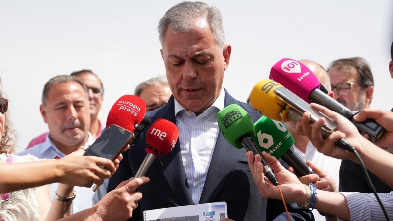

PSOE y Vox rechazan la cuestión de confianza de José Luis Sanz: 30 días para presentar una moción de censura en Sevilla
El gobierno de Jose Luis Sanz alcalde de Sevilla ha perdido hoy la cuestion de confianza debido a que no tenia mayoria para aprobar unos presupuestos para la ciudad, los grupos de la oposicion tienen 1 mes para presentar una mocion de censura.
